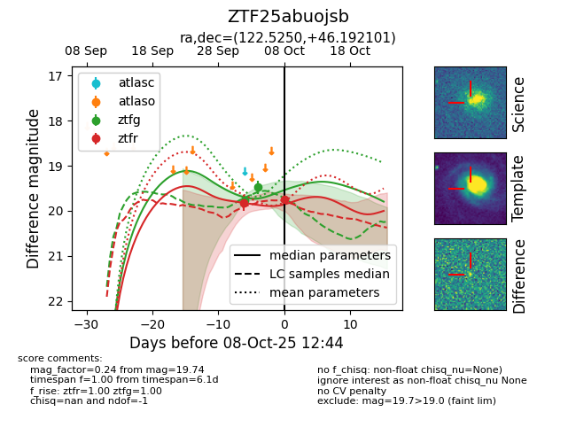
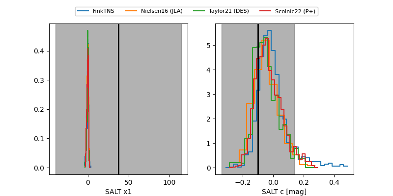

FINK: ZTF25abuojsb
Lasair: ZTF25abuojsb
ALeRCE: ZTF25abuojsb
ZTF25abuojsb (ztf,fink)
equatorial (ra, dec) = (122.5250,+46.19210)
galactic (l, b) = (173.5005,+32.43884)


last ztfg=19.48, ztfr=19.74
2 ztfg, 2 ztfr detections